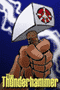

The Homebase cabinet
Members displayed trophies earned through HEAT events, membership and community contributions.
Explore My Homebase |
| |||||||||||

The original network used Homebase trophies to recognize membership, events and community contributions. This restoration keeps those criteria intact.
Members displayed trophies earned through HEAT events, membership and community contributions.
Explore My HomebaseSeven documented historical criteria, with surviving artwork shown only where the downloaded file is valid.
Browse the historical catalogue
UNVERIFIEDTwo surviving images were labeled by a later restoration, but their original earning criteria are not in the preserved article.
Review the evidence limitsOpen the Wayback capture as collected, with its historical markup and any remaining archive damage.
Open original capture21102.gif is an advertisement, not a Premium Member trophy, and is excluded from the catalog.6101.gif and 6144.gif files are HTML error pages. Their descriptions survive; their art does not.